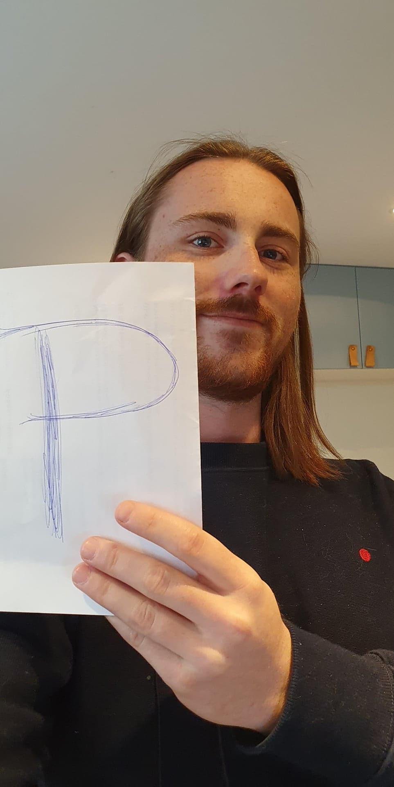

Hello, My name is Pontus, I'm 23 years old and I live in Stockholm.
I've been into web development for about 2 years. I got into coding because I found a crash course in Java a couple of years ago, I dove into the video tutorial and I began learning. Ever since i've been trying to become better at programming every day. As I began writing JavaScript I became more and more interested in web development and about a year ago I knew that wanted to make a living out of it.
In my spare time, when I'm not in front of my computer screen, I love to ski. For obvious reasons I can only do this a couple of months each year so other than that I like to spend time with my family and friends.